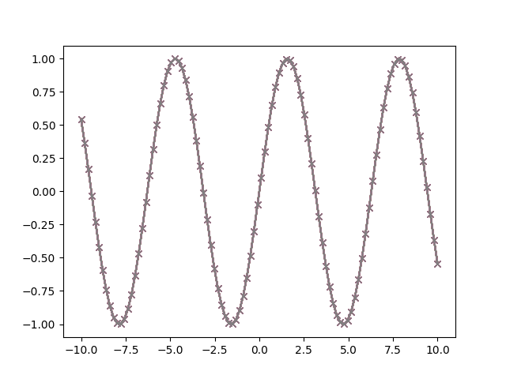

from matplotlib.pyplot import *
from statistics import *
from numpy import *
Bad imports!
import matplotlib.pyplot as plt
import statistics as stat
import numpy as np
Nice distribution that includes:
import numpy as np
x = np.array([[1,2,3],[4,5,6]])
print("x:\n{}".format(x))
x: [[1 2 3] [4 5 6]]
from scipy import sparse
# 2D NumPy array, identity matrix
eye = np.eye(4)
print("NumPy array:\n{}".format(eye))
NumPy array: [[1. 0. 0. 0.] [0. 1. 0. 0.] [0. 0. 1. 0.] [0. 0. 0. 1.]]
sm = sparse.csr_matrix(eye)
print("SciPy sparse CSR matrix:\n{}".format(sm))
SciPy sparse CSR matrix: (0, 0) 1.0 (1, 1) 1.0 (2, 2) 1.0 (3, 3) 1.0
import numpy as np
import matplotlib.pyplot as plt
# Generate sequence from -10 to 10, 100 steps in between
x = np.linspace(-10, 10, 100)
y = np.sin(x)
plt.plot(x, y, marker="x")

DataFrame data structure, modeled on R's DataFrameimport pandas as pd
# create simple dataset
data = {'Name': ["John", "Anna", "Peter", "Linda"],
'Location': ["New York", "Paris", "Berlin", "London"],
'Age': [24, 13, 53, 33]
}
data_pandas = pd.DataFrame(data)
data_pandas
| Name | Location | Age | |
|---|---|---|---|
| 0 | John | New York | 24 |
| 1 | Anna | Paris | 13 |
| 2 | Peter | Berlin | 53 |
| 3 | Linda | London | 33 |
data_pandas[data_pandas.Age > 30]
| Name | Location | Age | |
|---|---|---|---|
| 2 | Peter | Berlin | 53 |
| 3 | Linda | London | 33 |